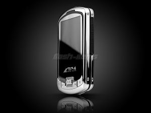

MP4
 De: La Frikipedia, la enciclopedia extremadamente seria.
De: La Frikipedia, la enciclopedia extremadamente seria.
| De la serie animales y otros bichejos:
|
|
|
| Nombre común:
|
Mp4
|
| Nombre científico:
|
Metete Pal Cuarto
|
| Especie:
|
Eletrico
|
| Subespecie:
|
De la familia de los ipod's a base de litio
|
| Alimentación:
|
Tu cerebro
|
| Apariencia:
|
No se sabe mucho de anatomia
|
| Hábitat natural:
|
Debajo de tu camisa(um... que hara hay)
|
| Localización:
|
En las tiendas de electronica
|
| Número aproximado de ejemplares:
|
perdi la cuenta despues del 2
|
| Fecha de extinción:
|
En lo que salga el Mp5
|
| Pokemonización:
|
Es la ultima etapa hasta que salga Mp5
|
Los Mp4 son seres super avanzados que evolucionan del Mp3 cuando llegan al nivel 100. Se está estudiando si estos seres pueden ser el eslabon perdido del hombre, pero se descartó por que demostraban más inteligencia que la mayoría de seres humanos.
Naturaleza
Se reproducen de la misma manera que los Mp3:
Ponen huevos en tu oído medio, pero aparte, tienen vídeo para que no te des cuenta de que están poniendo sus crías y para que disfrutes más.
Son los parientes pobres de los iPod's, ya que si bien pueden reproducir musica, ver videos, fotos, archivos .txt, y una larga lista de cosas, jamas van a compararse a su colega de la manzana (el unico que remotamente pasa cerca del iPod es el zune, el cual se funó por ser diseñado por hasecorp.
Mientras mas barato son, mas funcionales son, entiendase: Mientras un iPod solo puede mostrar imagenes, videos, y archivos Mp3, un Mp4 de 5€ puede (por una extraña razon) pueden, ademas de todo eso, leer archivos .txt, sintonizar tv (ideal para ver los simpsons en clase), traen camara digital, pokemonizan en Mp5, aunque por una extraña razon, a mas funciones, mas barato es (y mas posibilidades de falpas tiene). La excepcion logica a esta regla es el Zune™ de hasefroch, el cual posee la habitual tasa de cuelgues de windows, es caro y disfuncional (solo puede ser conectado a un pece con el driver indicado, no funciona en windows vista, y lo anterior no es de coña).
 Mp4 marca Mp4 player... que original
Tipos de MP4
Todas las personas que tienen un MP4 lo tienen de diferente clase no hay 2 MP4 iguales por su naturaleza destructiva y jode-oídos. Bueno vamos a ver que clases de especies hay:
- MP4 de laton: no suele costar mas de 2€ y solo tiene 0,000001 bytes de memoria nunca traen cascos y su bateria dura unos segundos realmente es una mierda.
- MP4 emo:Todos los MP4 que lleven mas de 3 meses sin comprarse se hacen MP4 emos y se cortan los cables, perdimos a muchos valientes
- MP4 Rambo: MP4 completamente indestructible ademas de alimentarse exclusivamente de carne humana, no es recomendable acercarse demasiado e uno de ellos
- MP4
gay:dependiendo del propietario ,si es hombre con un mp4 rosa (entre otros colores) con música por lo general pop (como miranda ,britney spears ,etc),electronica etc ,entonces ese mp4 es gay
- MP4 Ipodzado: Especie comun de MP4 cuyo unico objetivo es parecerse a un Ipod. Al no conseguirlo generalmente coje depresion se convierte en un MP4 emo y y se corta los cables .
- MP4 Hippie:En el solo se escuha bob marley y en su pantalla no solo se ve colorines. La leyenda dice que esta hecho de Porros
- Mp5: pese a que la creencia popular dice que el Mp5 es un subfusil (algo que defienden a pies juntillas los jigadores de counter strike), existe, y es un Mp4 con pantalla touch, rascaculos, sintonizador de tv digital, y una larga lista de funcionalidades que ahora no enumeraré. Suele tener un rendimiento parecido al Mp4 de laton, y se encuentra solo en paises subdesarrollados cuya poblacion sea lo suficientemente ingenua para comprarlo.
- Mp4 pijo: O mejor dicho, Mp4 pseudopijo, es aquel Mp4 por lo general de una marca ya conocida (lease: phillips, panasonic, sony walkman) que aparenta ser algo mas que los Mp4 del mall chino. Cuestan un cojon y la mitad del otro, y en algunos casos poseen el mismo rendimiento que el Mp4 de laton (una completa mierda.
- Zune: El pariente mas cercano del iPod. Planteado por factura puertas a los dos segundos de la salida del iPod al mercado, es lindo hasta quecte decides a usarlo: solo sirve para escuchar musica (y en el video tiene las mismas limitaciones que el Mp4), solo se conecta a un pc que tenga el software adecuado, y no permite cargar archivos que no sean de musica (no sirve para traficar pr0n.
- iPod video: El origen de toda la vicisitud. Apenas aparecio, los ejecutivos de Yunlong™ (a la par de bill gates) decidieron crear un bichejo mas barato que el iPod, por lo que salio el Mp4. Mientras una multitud de n00bs, canis, pseudopijos y demases bichejos corria a su mall chino mas cercano a comprarlo, steve jobs se descojonaba de risa en su oficina submarina viendo a todos los pobres infelices ir en pos de esas copias baratas de su invento. Es el responsable de la existencia del Mp4.
¿Sabias que...?
- ...el Mp4 es el enemigo natural del Ipod y el causante del holocausto Mp3 pero aun asi se desconocen muchas cosas sobre esta especie?
- ...el mp4 si lo sueltas ,se cae al suelo y se rompe(parece una bobada ,pero hay personas que piensan que los mp4 duran para toda la vida ,y no les importa si se les cae)?
- ...el Mp4 es infinitamente peor que un ipod?
- ...el Mp4 es infinitamente mas barato que un ipod?
- ...el Mp4 es infinitamente mas variado en cuanto a prestaciones y diseño que un ipod?
- ...el Mp4 mas barato puede leer videos, imagenes y cosas que no suenen, cosa que muchos ipod pueden hacer mejor?
- ...el Mp4 teme por su muerte, ya que el nacimiento del Mp5 es inminente?
- ...R2D2 fue el primer Mp4 pero solo reproducia videos cutres con una infima calidad en la que las personas parecian azules y transparentes?
- ...el mp4 es superior a la raza humana ya que no necesita orinar ni defecar ni comer ni dormir y no necesitan compañia para mantener relaciones sexuales ya que son hermafroditas?
- ...los mp4 dominaran a la raza humana conectandonos los audifonos por el culo ( a diferencia de el ipod que nos conectara el cable usb)?
- ...en el año 3000 ,seremos dominados por mp4 gigantes (¿no eran los iPod?
- ...Carrefour fabrica MP4?
- ...los Mp3 y las Mp5 se aliarán para extinguir a los M4?
- ...mi Mp4 es una mierda y he intentado destruirlo más de 8000 veces y sin éxito?
- IP anónima se ha modernizado y se ha pillado un Mp5?
- ... es mejor que juntes algo mas de dinero y te compres un iPod o por ultimo un Zune?
Véase también
Autor(es):
- Krusher
- Doctor grijander
- Aque
- Khazike Khashondo
- Majinkev
- Azulejos
- El Pan
- Ctrlaltsupr
- Veni Vidi Vici
- Hospitalé08
Frikipedia 2005-2016, Licencia
GFDL 1.2 - Extraído por FrikiLeaks